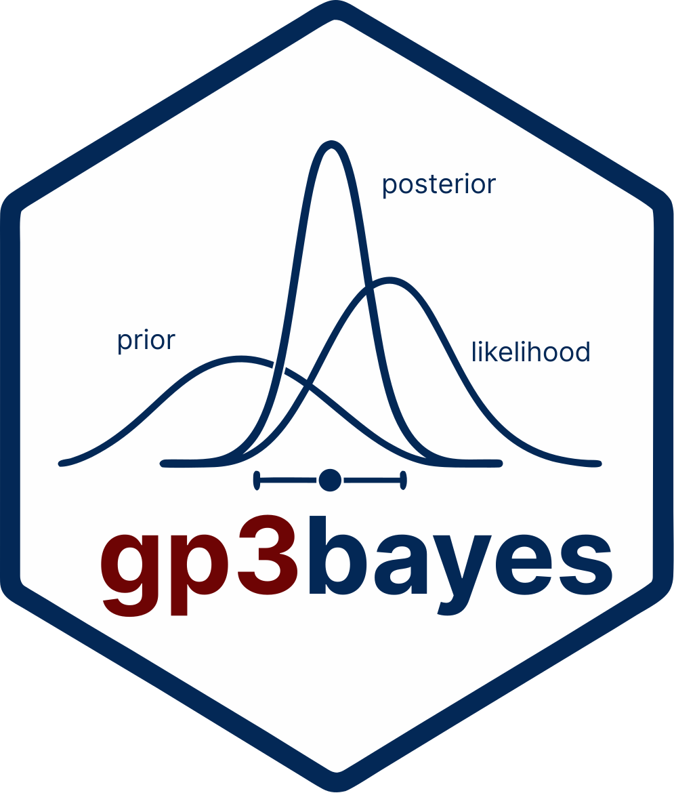
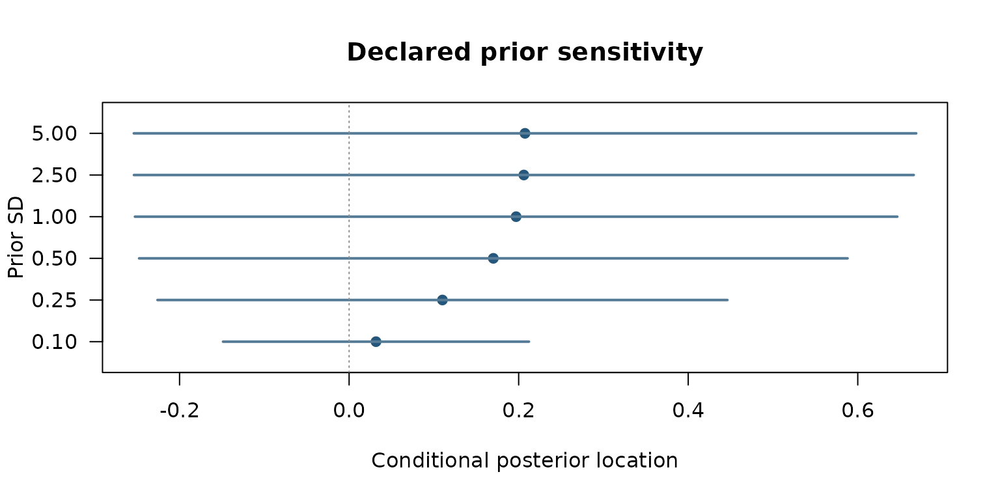
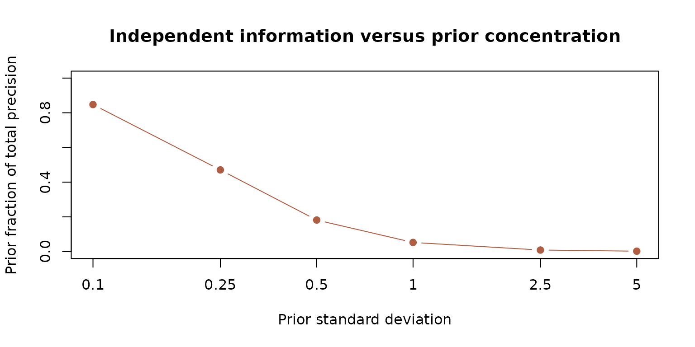

Prior sensitivity and independent information: an analytical Bayesian example
Source:vignettes/october-2026-conjugate-prior-sensitivity.Rmd
october-2026-conjugate-prior-sensitivity.RmdA fully declared conjugate model
This self-contained, synthetic illustration uses a known-variance
normal likelihood, not a multilevel gaze mediation model. Its purpose is
to show that a fitted effect and its interval depend on both independent
information and declared prior scale. It is not a claim
about brms, hardware validity, Bayesian mediation
identification, or data-based prior elicitation.
For independent observations y_i ~ Normal(mu, 1), take
the prior mu ~ Normal(0, tau^2). The exact conjugate
posterior has variance (n + 1/tau^2)^(-1) and mean
sum(y)/(n + 1/tau^2). All uncertainty values below are
model-conditional credible intervals, not frequency-calibrated
confidence intervals.
set.seed(20261022)
y <- stats::rnorm(18, mean = 0.35, sd = 1)
prior_sd <- c(0.10, 0.25, 0.50, 1, 2.5, 5)
posterior_sd <- sqrt(1 / (length(y) + 1 / prior_sd^2))
posterior_mean <- sum(y) / (length(y) + 1 / prior_sd^2)
q <- stats::qnorm(0.975)
tab <- data.frame(prior_sd = prior_sd, posterior_mean = posterior_mean,
lower = posterior_mean - q * posterior_sd,
upper = posterior_mean + q * posterior_sd)
stopifnot(all(tab$lower <= tab$posterior_mean),
all(tab$posterior_mean <= tab$upper))
tab## prior_sd posterior_mean lower upper
## 1 0.10 0.03171914 -0.1487102 0.2121484
## 2 0.25 0.11008406 -0.2260470 0.4462151
## 3 0.50 0.17012991 -0.2477358 0.5879956
## 4 1.00 0.19699252 -0.2526541 0.6466391
## 5 2.50 0.20610451 -0.2538238 0.6660329
## 6 5.00 0.20747550 -0.2539800 0.6689310Figure 1. Analytical posterior intervals across prior scales
graphics::plot(tab$posterior_mean, seq_along(tab$prior_sd),
xlim = range(c(tab$lower, tab$upper)), ylim = c(0.5, nrow(tab) + 0.5),
pch = 19, col = "#24577B", yaxt = "n",
xlab = "Conditional posterior location", ylab = "Prior SD",
main = "Declared prior sensitivity")
graphics::axis(2, at = seq_along(tab$prior_sd),
labels = format(tab$prior_sd), las = 1)
graphics::segments(tab$lower, seq_along(tab$prior_sd),
tab$upper, seq_along(tab$prior_sd),
lwd = 2, col = "#567B97")
graphics::abline(v = 0, lty = 3, col = "#8E8E8E")
Synthetic normal-normal analytical posterior means and 95% equal-tailed credible intervals at declared prior scales. Not a posterior computation for the gp3bayes multilevel mediation API.
Figure 2. Likelihood and prior precision
prior_precision <- 1 / prior_sd^2
posterior_precision <- length(y) + prior_precision
graphics::plot(log10(prior_sd), prior_precision / posterior_precision,
type = "b", pch = 19, col = "#B05E43",
xaxt = "n", ylim = c(0, 1), xlab = "Prior standard deviation",
ylab = "Prior fraction of total precision",
main = "Independent information versus prior concentration")
graphics::axis(1, at = log10(prior_sd), labels = prior_sd)
Exact posterior precision decomposition for the deliberately simple normal model; no uncertainty about the residual variance is propagated.
Limits and implications
The independence assumption, normal likelihood, known residual variance and single scalar parameter make this an elementary algebraic example rather than a validated workflow for gaze, SCR, pupil, participant heterogeneity, missingness or causal mediation. Posterior credible bounds are valid conditional on that declared model. Priors and sensitivity ranges must be justified by measurement scales and domain knowledge; an apparent stable interval is not a substitute for recovery, prior predictive checks, external reference data or conditional causal identification.
The more ambitious evidence-atlas, mediation-functional-form and uncertainty diagnostics remain in draft research PR #28, without a stable CRAN promotion. Current GitHub 0.6.0 and CRAN 0.5.0 are different publication lines.